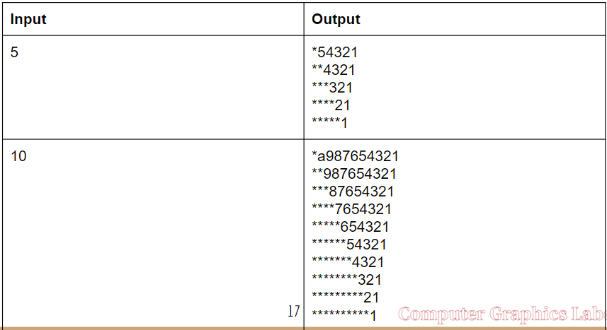
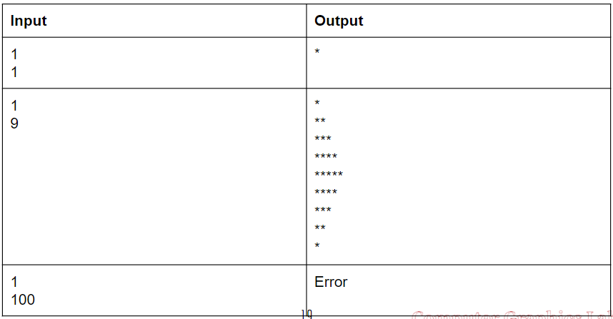

Chapter 9_project 5
請定義3個function: f1(n), f2(n1, n2), main()。
f1(n):
Input: n is an Integer.
Output: If the n is not in {1, 2, 3, 4,…, 30}, then output "Error".
f2(n1, n2):
Input：n1, n2 are Integer.
Output：
(1) If n1 not in {1, 2, 3}, then output "Error".
(2) If n2 not in {1, 3, 5, 7, 9, …,29}, then output "Error".
(3) n1 denotes 1 (right Triangle diagram), 2 (left Triangle diagram), 3 (Diamond diagram)}.
(4) n2 denotes the height of the diagram.
main():
User can input repeatedly until 0 to exit the program.
(可一直輸入直到輸入 0 結束；輸出 Error 結束)
Input 1, then input n to run f1(n);
Input 2, then input n1, n2 to run f2(n1, n2);
Other input, then output "Error" to exit the program.
在main()裡依據使用者輸入的數字來呼叫f1(n)或f2(n1, n2)，要能重複輸入。
Input/Output f1(n)

Input/Output f1(n)
Input/Output f2(n1, n2)
Input/Output f2(n1, n2)

Input/Output main( )
hints
#include <stdio.h>
void f1(int n){
}
void f2(int n1, int n2){
}
int main(){
int choose; //選擇哪個function
int n1, n2; // 要丟給function的數字
while(1){
scanf("%d", &choose);
if(choose == 0)
else if(choose != 1 && choose != 2){
}
else if(choose == 1){
}
else if(choose == 2){
}
}
return 0;
}
Chapter 9_project 6
輸入說明：
1. 第一行輸入一個正整數 n，代表大學個數 n ，(n<=10)。
2. 其後 n 行，每一行第一項為大學名稱，接著為其屬性。大學名稱最多有 10 個字母，各屬性為 2 個字母。大學與屬性資料均為英文字母組成，大學名稱及各屬性間以 1 個空白分隔。
3. 接下來 1 行輸入一個正整數 m，為查詢個數，(m<=10)。
4. 其後 m 行，每一行有一個查詢。查詢條件為校園屬性組成，每個校園屬性為 2 個字元。用 + 號區格的條件代表"或" 的關係，沒有 + 區隔的條件代表 "且" 的關係。屬性間及 + 之間有 1 個空白間隔。例如： BC NS + CT HL 代表需找出【大校園且靠海】，或【交通方便且校園有湖】的所有大學名稱。其格式如下:
XX YY + AA BB
意思為屬性條件為: XX 且 YY，或是 AA 且 BB。
5. 最後 1 行輸入一個正整數 b，b=0，代表輸出能符合條件的大學。例如：條件 NS BC NC + CT HL，大學屬性NTUT NC BC NS ，則 NTUT 符合條件。 b=1，代表輸出部分符合且符合最多條件的大學。例如：條件 NS BC NC + CT HL，大學屬性 NTUT BC NS、 NTUST BC，則輸出 NTUT。
輸出說明：
m 行，第 i 列印出第 i 個查詢中，所有符合之大學名稱。
若有多個大學符合一個查詢，各大學間以一個空白分隔。
每行查詢的輸出順序，根據先後子查詢條件符合的大學順序輸出。

hints
符合條件設為1，不符合設為0。
AND: 做乘法
OR: 做加法
Example:
有a、b、c、d四種屬性
A符合 a、c 記為[1, 0, 1, 0]
1. 查詢A是否符合 a且b: 1 * 0 = 0
2. 查詢A是否符合 a或b: 1 + 0 = 1
3. 查詢A是否符合 a且c 或 b且d: 1 * 1 + 0 * 0 = 1
int n; // 大學個數
int m; // 查詢個數
int attr[10][8]; // attribute
char u_name[10][10]; // university name
char input_attr[2]; // 輸入屬性用
char query[10][40]; // 輸入搜尋
// init attr
for(int i = 0; i < 10; i++)
for(int j = 0; j < 8; j++)
attr[i][j] = 0;
// input
scanf("%d", &n); // 輸入大學個數
for(int i = 0; i < n; i++){
int j = 0;
// 輸入大學名稱
while(j < 10 && (u_name[i][j]=getchar()) != ' '){
j++;
}
// 輸入該大學屬性
j = 0;
while((input_attr[j]=getchar()) != '\n'){
}
}
// query
scanf("%d", &m);
for(int i = 0; i < m; i++){
int j = 0;
// 輸入查詢條件
while((query[i][j]=getchar()) != '\n'){
j++;
}
}
scanf("%d", &b);
if(b == 0){
}
else if(b == 1){
}